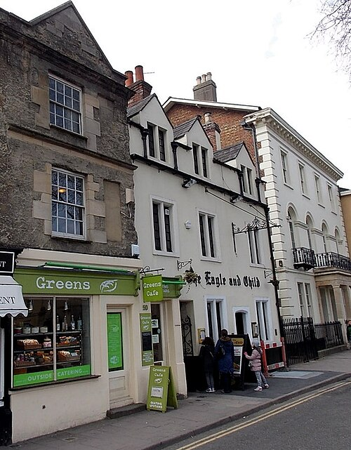

Мир
Пабы
Морс думает в пабе. Пинта эля для него — рабочий инструмент, и Декстер всегда называет пабы точно: по ним можно прокладывать маршрут. Ниже — пабы из прочитанных романов; список растёт с каждым выпуском.
«Чёрный принц», Вудсток
Паб у моста в Старом Вудстоке, Манор-роуд, 2. Во дворе за ним находят Сильвию Кей в «Последнем автобусе на Вудсток». В экранизации его сыграл другой паб, «Фокс энд Касл» в Олд-Виндзоре.


«Переплётчики», Джерико
Bookbinders Arms на Кэнал-стрит, теперь Old Bookbinders: паб квартала, где жили рабочие университетской типографии, и название напоминает об этом.


«Птичка с младенцем»
Так в Оксфорде зовут «Орла и дитя» (Eagle and Child) на Сент-Джайлс. Здесь собирались «Инклинги» — Толкин, Льюис и их друзья.


«Белая лошадь», Брод-стрит
Маленький паб рядом с книжным магазином Блэквелла. Морс заходит сюда в «Последний раз её видели».


Бар «Рэндольфа»
Бар старой гостиницы на Бомонт-стрит, напротив музея Эшмола. Тоже из второго романа.


«Джерико Армс»
Паба с таким названием в Оксфорде нет. Ближе всего к нему настоящая таверна «Джерико» на Вальтон-стрит.